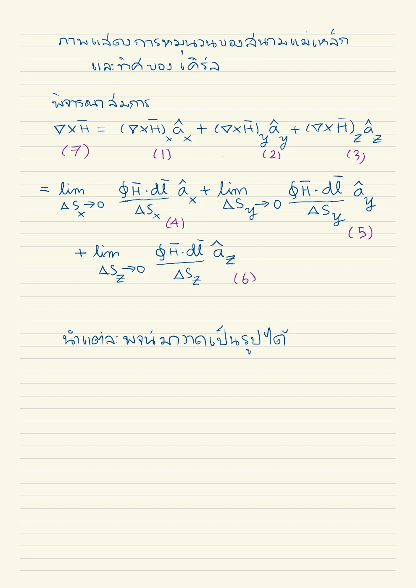

01 นิยามการวนต่อพื้นที่
(∇ × H) • an=limΔS→0∮∂ΔSH • dlΔS
เหตุใดจึงแปลงรูปเช่นนี้? นิยามได้องค์ประกอบ curl ตามปกติของวง ไม่ใช่ค่า curl ทั้งเวกเตอร์จากวงเดียว
Curl & Stokes · Hayt §7.3–7.4 D7.5–D7.6; Sadiku §3.6–3.7
การวนของสนามรอบวงเล็กจะให้ความหนาแน่นกระแส ณ จุดได้อย่างไร?
curl ไม่ใช่ความโค้งของเส้นสนาม แต่คือการวนสุทธิต่อพื้นที่ของวงเล็ก สนามเส้นตรงที่มีขนาดต่างกันคนละด้านของวงก็มี curl ได้ ส่วนสนามที่มองเห็นเป็นวงอาจมี curl ศูนย์นอกจุดแหล่ง การดูรูปร่างอย่างเดียวจึงไม่พอ
เอาวงเล็กมาต่อกัน การเดินบนขอบร่วมสวนกันจึงตัดกัน เหลือขอบนอกเพียงวงเดียว เป็นเหตุให้ผลรวม curl ทั่วผิวเท่ากับการวนบนขอบตามสโตกส์ และทิศปกติต้องคู่กับทิศวงด้วยมือขวา
ขอบเขตแบบจำลอง: สนามเรียบ ผิววางทิศได้และขอบคู่ตามมือขวา; ∇×H=J ใช้แม่เหล็กสถิต
เหตุใดจึงแปลงรูปเช่นนี้? นิยามได้องค์ประกอบ curl ตามปกติของวง ไม่ใช่ค่า curl ทั้งเวกเตอร์จากวงเดียว
เหตุใดจึงแปลงรูปเช่นนี้? เดินทวนเข็มเมื่อมองจาก +z คู่ด้านแนว y ให้พจน์บวก คู่ด้านแนว x ให้พจน์ลบ
เหตุใดจึงแปลงรูปเช่นนี้? ΔxΔy ตัดออก อนุพันธ์แสดงความต่างสนามระหว่างด้านคู่ของวง
เหตุใดจึงแปลงรูปเช่นนี้? วนลำดับ x,y,z ให้ครบ สูตรนี้แสดงอนุพันธ์ทุกคู่ก่อนแทนข้อมูล
เหตุใดจึงแปลงรูปเช่นนี้? แอมแปร์จริงทุกวงเล็กจึงเทียบการวนต่อพื้นที่กับความหนาแน่นกระแสต่อพื้นที่ได้
เหตุใดจึงแปลงรูปเช่นนี้? หาอนุพันธ์ฟังก์ชันก่อน หากแทน P ก่อน สนามจะกลายเป็นค่าคงที่และอนุพันธ์ผิดเป็นศูนย์
เหตุใดจึงแปลงรูปเช่นนี้? หน่วย H หารระยะเป็น A/m² และ divergence ของ curl ต้องเป็นศูนย์ในสนามเรียบ
เหตุใดจึงแปลงรูปเช่นนี้? ขอบร่วมของวงย่อยหักล้าง เหลือขอบนอก กฎนี้เป็นเรขาคณิตของตัวดำเนินการ ไม่ใช่กฎวัสดุ
เหตุใดจึงแปลงรูปเช่นนี้? ด้านขวาของวงมี Hy=ka ด้านซ้ายศูนย์ อีกสองด้าน dot เป็นศูนย์ ผลตรงกับ curl คูณพื้นที่
เขียนสูตรทั่วไป → ระบุพิกัดและทิศ → วิเคราะห์ด้วยมือ → ใช้ขอบเขต → ตรวจหน่วย SI และความหมาย
การคำนวณ J จาก H ใช้ตรวจสนามแม่เหล็กในแบบจำลองตัวนำว่าตรงกับแหล่งกระแสที่ตั้งไว้หรือไม่
การวนของสนามไฟฟ้าในบทฟาราเดย์จะทำให้แรงดันขึ้นกับวงและฟลักซ์ ซึ่งเป็นฐานแรงดันเหนี่ยวนำในขดลวดหม้อแปลง
ลองอธิบายด้วยคำของตนเอง: H=kx ay มีเส้นสนามตรง แต่ curl ไม่ศูนย์ได้อย่างไร? อธิบายจากความต่างสองด้านของวง
ปรับพารามิเตอร์สนามในสื่อเคิร์ลแล้วเทียบผลปริพันธ์วงกับผิว ต้องมีค่าและเครื่องหมายเท่ากันเมื่อใช้ปกติเดียวกัน
ก่อนปรับ: ทำนายทิศและขนาด · หลังปรับ: อธิบายด้วยสมการและเงื่อนไข
แนวคิดของบทนี้เป็นฐานให้ Set 18, Set 19, Set 20, Set 22
เลขหน้าทั้งหมดนับหน้า PDF รวมปก ตำราเป็นแหล่งตรวจวิธีและนิยาม ไม่ได้กล่าวว่าข้อมูลทุกตัวอย่างตรงกับข้อสอบ บทอธิบายและการพิสูจน์ด้านบนเรียบเรียงเพื่อการสอน
เคิร์ลคือการวนต่อหน่วยพื้นที่ในลิมิตพื้นที่เล็กมาก ทิศเวกเตอร์เป็นแกนการวนตามมือขวา ทฤษฎีบทสโตกส์ทำให้การรวมเคิร์ลบนผิวเท่ากับอินทิกรัลตามขอบผิว
| ax | ay | az |
| ∂∂x | ∂∂y | ∂∂z |
| Hx | Hy | Hz |
อ่าน สไลด์หลัก · หน้า PDF 1 ควบคู่กับคำอธิบายด้านล่าง เพื่อเทียบรูปและลำดับสมการ
ต้องเขียนดีเทอร์มิแนนต์ทั่วไปก่อนแทนองค์ประกอบ ลืมเครื่องหมายลบของไมเนอร์แกน y จะผิดทั้งเวกเตอร์ ∇×H = J ใช้ตรง ๆ ไม่ได้เมื่อ D เปลี่ยนตามเวลา
ขยายสนามกึ่งกลางวงเล็กด้วยเทย์เลอร์ พจน์สนามคงที่ของด้านตรงข้ามหักล้าง เหลือ
หารพื้นที่และเข้าใกล้ศูนย์ได้องค์ประกอบ z ของเคิร์ล เมื่อรวมวงเล็กเป็นผิวใหญ่ ขอบด้านในเดินสวนกันและหักล้าง เหลือขอบนอก นี่คือที่มาของสโตกส์
ด้านเส้นมีหน่วย A/m × m = A ด้านผิว A/m² × m² = A ตรวจทั้งสองด้านใน Drill D7.6 ด้านล่าง
| สัญลักษณ์ | ความหมาย / คำอ่าน | SI |
|---|---|---|
| ∇ × H | เคิร์ลของความเข้มสนามแม่เหล็ก | A/m² |
| J | ความหนาแน่นกระแสแม่เหล็กสถิต | A/m² |
| C | เส้นปิดขอบผิว | m |
| S | ผิวเปิดที่มี C เป็นขอบ | m² |
แสดง 49 หน้า
แต่ละรายการเรียบเรียงภาษาไทย พร้อมภาพต้นฉบับหน้าเดียวกัน ภาพคงรูปเวกเตอร์และลำดับการพิสูจน์ของอาจารย์ เปิดเฉพาะหน้าที่ต้องการอ่าน
| สัญลักษณ์ | คำอ่านและความหมาย | SI |
|---|---|---|
| x,y,z; r,ρ; θ,ϕ | เอ็กซ์ วาย แซด; อาร์ โร; ทีตา ไฟ · พิกัดและมุม | m; m; rad |
| E, D; H, B | อี ดี; เอช บี · สนามและฟลักซ์ไฟฟ้า/แม่เหล็ก | V/m, C/m²; A/m, T |
| J, K; ρv, ρs | เจ เค; โรซับวี โรซับเอส · กระแสปริมาตร/ผิวและประจุปริมาตร/ผิว | A/m², A/m; C/m³, C/m² |
| ε, μ, σ; εr, μr | เอปไซลอน มิว ซิกมา · สภาพยอม ความซาบซึมได้ สภาพนำ; ค่าสัมพัทธ์ | F/m, H/m, S/m; ไม่มีหน่วย |
| P, χe | พี ไคซับอี · โพลาไรเซชันและความไวทางไฟฟ้า | C/m², ไม่มีหน่วย |
| I, Q, q; V, V0 | ไอ คิว คิว; วี วีซับศูนย์ · กระแส ประจุรวม/ย่อย ศักย์/แรงดันกำหนด | A, C, C; V, V |
| C, W; S, A; d,L | ซี ดับเบิลยู; เอส เอ; ดี แอล · ความจุ พลังงาน พื้นที่ ระยะห่าง ความยาว | F, J; m², m²; m,m |
| A, Φ | เอ ไฟตัวใหญ่ · ศักย์เวกเตอร์แม่เหล็กและฟลักซ์ | Wb/m, Wb |
| ω, f, λ; k, η | โอเมกา เอฟ แลมบ์ดา; เค อีตา · ความถี่เชิงมุม ความถี่ ความยาวคลื่น เลขคลื่น อิมพีแดนซ์ | rad/s, Hz, m; rad/m, Ω |
| v, t; dl, ds, dv | วี ที; ดีแอล ดีเอส ดีวี · ความเร็ว เวลา ส่วนย่อยความยาว ผิว ปริมาตร | m/s, s; m,m²,m³ |
| an, j; ∇, ∇2 | เอซับเอ็น เจ; เดล ลาปลาเซียน · เวกเตอร์หน่วย หน่วยจินตภาพ ตัวดำเนินการพื้นที่ | ไม่มีหน่วย; ต่อระยะทางและระยะทาง² |
| Es, Hs | อีซับเอส เอชซับเอส · เฟสเซอร์เชิงอวกาศ | V/m, A/m |
องค์ประกอบสนามมีหน่วยเดียวกับสนาม ตัวห้อย t,n คือสัมผัสและปกติ ตัวห้อย 1,2 คือตัวกลาง ไพรม์ระบุแหล่งกำเนิด a ที่เป็นค่าคงตัวจากการอินทิเกรตมีหน่วยตามสมการที่ใช้; a ที่เป็นเวกเตอร์หน่วยไม่มีหน่วย
ในแม่เหล็กสถิตให้ H = x2z ay − y2x az A/m โดยใช้พิกัดเป็น m จงหา J ที่ P(2,3,4)
ALL-Q07 · เคิร์ล ณ จุด · เรียบเรียงจากไฟล์จริง · Set 17 · หน้า PDF 1 · Hayt D7.5(a) · หน้า PDF 216 · ชุดโจทย์เดิม · หน้า PDF 21
| ax | ay | az |
| ∂∂x | ∂∂y | ∂∂z |
| Hx | Hy | Hz |
ทำไมจึงทำขั้นนี้? ดีเทอร์มิแนนต์ทั่วไปแสดงเครื่องหมายตามลำดับฐาน
ทำไมจึงทำขั้นนี้? ต้องระบุองค์ประกอบให้ครบรวมส่วนที่เป็นศูนย์
ทำไมจึงทำขั้นนี้? ถือ x,z คงที่ในอนุพันธ์ y และถือ x,y คงที่ในอนุพันธ์ z
ทำไมจึงทำขั้นนี้? รักษาลบจากสูตร curl แยกจากลบในองค์ประกอบ Hz
ทำไมจึงทำขั้นนี้? คง z เป็นตัวแปรจนอนุพันธ์เสร็จ แล้วจึงแทนพิกัด
การดิฟเฟอเรนเชียลสนามต่อระยะทางเปลี่ยน A/m เป็น A/m²; ∇•J = −2y + 2y = 0 เข้ากับกระแสสถิต
ทำไมจึงทำขั้นนี้? ตรวจ divergence J=0 เป็นการตรวจอิสระของกระแสสถิต
ให้ H = 6xyax − 3y2ay A/m จงหาทั้งสองด้านของทฤษฎีบทสโตกส์บนสี่เหลี่ยม 2 ≤ x ≤ 5, −1 ≤ y ≤ 1, z = 0 โดยปกติผิวเป็น +az
Drill ตำรา: คงค่าตามต้นฉบับ · Hayt D7.6 · หน้า PDF 220 · Set 17 · สูตรพื้นฐานที่เกี่ยวข้อง · หน้า PDF 47 · Set 20 · สโตกส์เชื่อมวงกับผิว · หน้า PDF 10
| ax | ay | az |
| ∂∂x | ∂∂y | ∂∂z |
| Hx | Hy | Hz |
เดินขอบทวนเข็มนาฬิกาเมื่อมองจาก +z เริ่ม (2,−1) → (5,−1) → (5,1) → (2,1) → (2,−1)
ทำไมจึงทำขั้นนี้? ใช้ปกติ +az กำหนดการเดินวงทวนเข็มตามมือขวา
ทำไมจึงทำขั้นนี้? เคิร์ลมีเฉพาะ z จึงผลคูณจุดกับปกติเลือก −6x
ทำไมจึงทำขั้นนี้? ขอบบนและซ้ายเดินสวนแกนบวก ต้องใส่ขอบเขตตามการเดินจริง
ตรงกับอินทิกรัลผิวและคำตอบตำรา หากกลับปกติพร้อมเดินขอบกลับ ผลจะเป็น +126 A ทั้งคู่
ทำไมจึงทำขั้นนี้? ตรวจทั้งสองด้านเท่ากันเพื่อจับเครื่องหมายขอบผิด
เลื่อนพารามิเตอร์เพื่อดูแนวโน้มและเครื่องหมาย แล้วกลับไปพิสูจน์ด้วยสูตรตั้งต้นในตัวอย่าง
ตัวอย่างเพิ่มเติม โน้ต และภาพลายมือแสดงเป็นหน้าต้นฉบับเรียงลำดับ ใช้คำอธิบายและวิธีทำในบทนี้ประกอบ
กำหนดปกติวงด้วยมือขวาให้เป็นทิศเคิร์ล

รวมเคิร์ลสามองค์ประกอบเป็นเวกเตอร์ ไม่รวมขนาดอย่างเดียว
เคิร์ล H ตรงกับ J เฉพาะแม่เหล็กสถิต; กรณีแปรตามเวลาต้องรวม Jd
เริ่มแอมแปร์รูปจุดและดีเทอร์มิแนนต์ทั่วไปก่อนแทนองค์ประกอบ H
หาอนุพันธ์ก่อนแทน P(2,3,4) ได้ J = −16 ax + 9 ay + 16 az A/m²